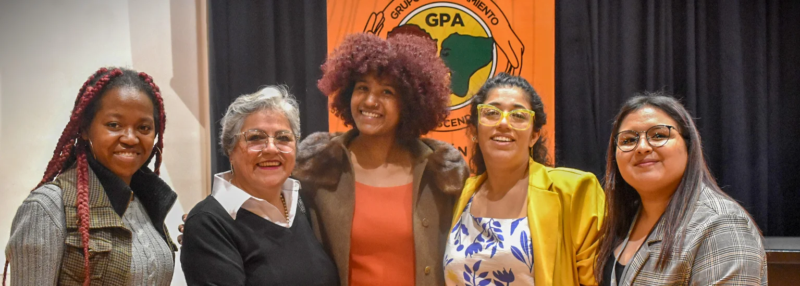
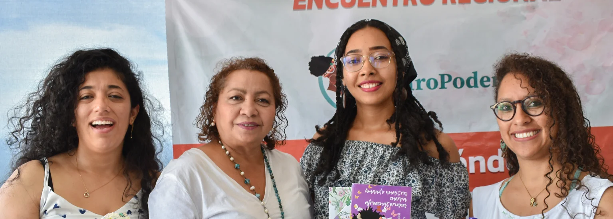
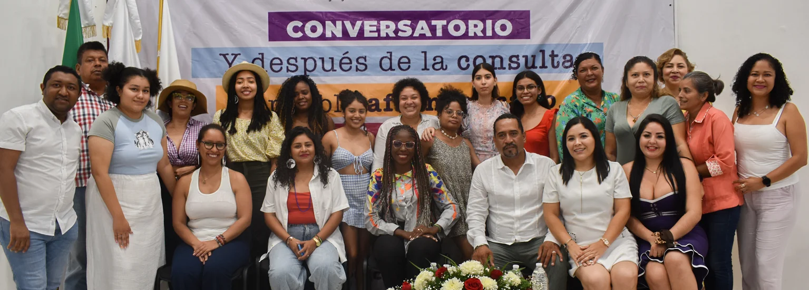
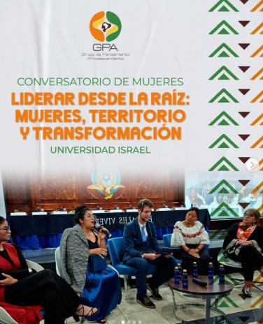
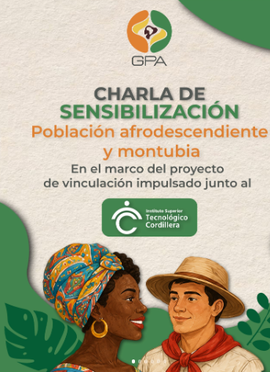
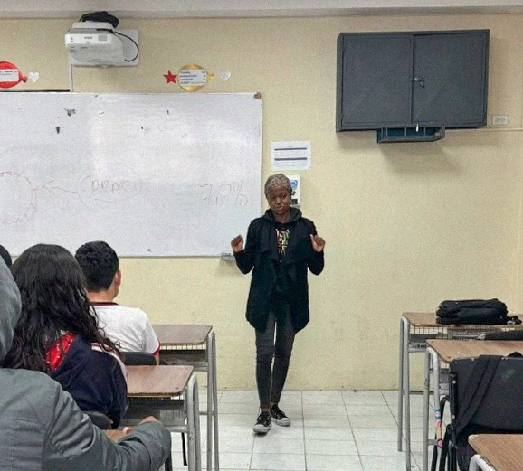
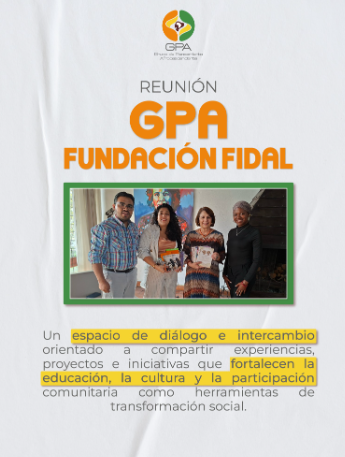
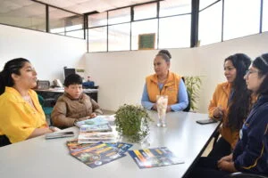
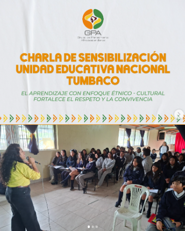
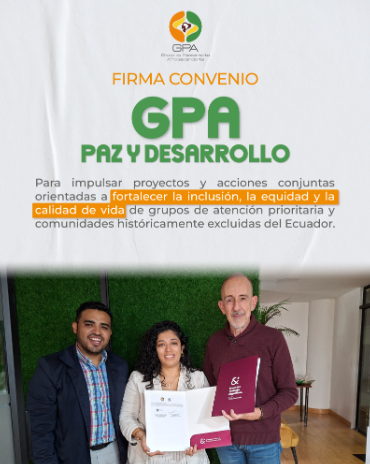

Noticias
Explora las últimas actividades, comunicados y registros fotográficos en movimiento.
Noticias destacadas

Conversatorio de mujeres “Liderar desde la raíz: mujeres, territorio y transformación” U Israel
En el marco del VI Congreso Internacional de Innovación Tecnológica (CIIT) y el VI Congreso Internacional de Gestión y Sostenibilidad Empresarial (CIGESE), organizados por la Universidad Israel, se desarrolló el conversatorio de mujeres “Liderar desde la raíz: mujeres, territorio y transformación”.
Leer más
Charla de Sensibilización Proyecto Vinculación Instituto Cordillera
En el marco del proyecto de vinculación impulsado junto al Instituto Cordillera, se desarrolló una Charla de Sensibilización sobre la población afrodescendiente y montubia.
Leer más
Evento de Presentación Compilado IV Edición y Lanzamiento V Edición TLCC
En una jornada llena de creatividad, talento y emoción, se llevó a cabo el Evento de Presentación del Compilado de la IV Edición y el Lanzamiento oficial de la V Edición del concurso literario juvenil “Te Lo Cuento en un Cuento”.
Leer más
Conversatorio del Día de la Bomba del Chota
En conmemoración del Día de la Bomba del Chota, se desarrolló un conversatorio dedicado a reconocer el valor histórico, cultural y artístico de una de las expresiones más representativas del pueblo afroecuatoriano.
Leer másConversatorio de mujeres “Liderar desde la raíz: mujeres, territorio y transformación” U Israel
En el marco del VI Congreso Internacional de Innovación Tecnológica (CIIT) y el VI Congreso Internacional de Gestión y Sostenibilidad Empresarial (CIGESE), organizados por la Universidad Israel, se desarrolló el conversatorio de mujeres “Liderar desde la raíz: mujeres, territorio y transformación”.
Leer másCharla de Sensibilización Proyecto Vinculación Instituto Cordillera
En el marco del proyecto de vinculación impulsado junto al Instituto Cordillera, se desarrolló una Charla de Sensibilización sobre la población afrodescendiente y montubia.
Leer másEvento de Presentación Compilado IV Edición y Lanzamiento V Edición TLCC
En una jornada llena de creatividad, talento y emoción, se llevó a cabo el Evento de Presentación del Compilado de la IV Edición y el Lanzamiento oficial de la V Edición del concurso literario juvenil “Te Lo Cuento en un Cuento”.
Leer másConversatorio del Día de la Bomba del Chota
En conmemoración del Día de la Bomba del Chota, se desarrolló un conversatorio dedicado a reconocer el valor histórico, cultural y artístico de una de las expresiones más representativas del pueblo afroecuatoriano.
Leer másComunicados y Actividades

Firma Convenio GPA - Paz y Desarrollo
Firma del Convenio Marco de Cooperación tiene por objeto establecer las bases de colaboración entre GPA y PyD para la realización de proyectos y acciones conjuntas en los territorios de trabajo en que coinciden, incluyendo la búsqueda de financiamiento nacional e internacional.
Leer más
Charla de Sensibilización UEM Calderón y Entrega de Material Etnoeducativo
Con el objetivo de promover el respeto, la inclusión y el reconocimiento de la diversidad cultural, se desarrolló la Charla de Sensibilización sobre la población afrodescendiente y montubia en la UEM Calderón, en el marco del concurso literario “Te lo Cuento en un Cuento”.
Leer más
Charla de Sensibilización Unidad Educativa Nacional Tumbaco
Fortaleciendo el tejido social y la participación activa en Quito.
Leer másReunión Dra. Rosalía Arteaga - Fundación FIDAL
Se llevó a cabo una reunión con la Dra. Rosalía Arteaga y la Fundación FIDAL, un espacio de diálogo e intercambio orientado a compartir las experiencias y proyectos impulsados desde el GPA en favor de la educación, la cultura y el fortalecimiento comunitario en el Ecuador.
Leer más
Firma Convenio GPA - Paz y Desarrollo
Firma del Convenio Marco de Cooperación tiene por objeto establecer las bases de colaboración entre GPA y PyD para la realización de proyectos y acciones conjuntas en los territorios de trabajo en que coinciden, incluyendo la búsqueda de financiamiento nacional e internacional.
Leer másCharla de Sensibilización UEM Calderón y Entrega de Material Etnoeducativo
Con el objetivo de promover el respeto, la inclusión y el reconocimiento de la diversidad cultural, se desarrolló la Charla de Sensibilización sobre la población afrodescendiente y montubia en la UEM Calderón, en el marco del concurso literario “Te lo Cuento en un Cuento”.
Leer másCharla de Sensibilización Unidad Educativa Nacional Tumbaco
Fortaleciendo el tejido social y la participación activa en Quito.
Leer másReunión Dra. Rosalía Arteaga - Fundación FIDAL
Se llevó a cabo una reunión con la Dra. Rosalía Arteaga y la Fundación FIDAL, un espacio de diálogo e intercambio orientado a compartir las experiencias y proyectos impulsados desde el GPA en favor de la educación, la cultura y el fortalecimiento comunitario en el Ecuador.
Leer más